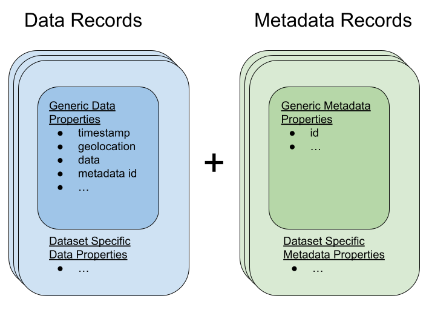

Argovis data schema¶
All data indexed by Argovis follows the schema described in this document. The purpose of this schema is to standardize the representation of profile-, grid-, and sea surface-type datasets to promote their interoperability and underwrite a standardized API to serve them all.
The Last Word
In the event of conflicts in schema definition, the implementation at https://github.com/argovis/db-schema is to be taken as correct above all others.
A heritable generic schema¶
Argovis schema are designed to inherited from a semi-well-defined generic schema that structures the most universal aspects of earth system data in a regular fashion, thereby standardizing the commonalities between these dataset representations, while preserving the ability for individual datasets to represent unique data. All datasets in Argovis are thus represented by a pair of collections, one for data, and one for metadata, where the dataset-specific records in each inherit from the generic data and metadata schemas respectively. This can be visualized as per:
In other words, all data records for all datasets include the fields defined below in the generic data record section, and similarly for metadata records. Each dataset can append additional fields to each to capture their specifics; each dataset supported by Argovis has its extension specifics detailed in subsequent sections of this document.
How to read this schema¶
Each entry in the schema fragments below contain a few keys:
required: whether or not this attribute can be omitted; “case” indicates case-by-case decisions for different datasets
type: the primitive type, format, or object description of a valid entry for this field
description: short comment on what this variable is
fill value (optional): what this should be filled by if absent
current vocabulary (optional): current set of possible values for this key, with explanations as required.
Schema enforcement & population¶
Argovis uses MongoDB as its backend. All datasets have their data and metadata schema defined in https://github.com/argovis/db-schema, which includes enforcement of these schema when uploaded to mongodb; therefore, the schema implementation in that code should be considered the most reliable document of our schema.
Generic Point Schema¶
As noted above, generic schema form the basis of all schema in Argovis; this section describes the minimum viable information needed to populate these schema for our point-like datasets. Subsequent sections describe how specific datasets extend and implement these core definitions.
Generic Data Schema¶
In general, data records are intended to represent data that is unique or frequently changing per longitude / latitude / timestamp triple, in order to support efficient temporospatial indexing of these records in Mongodb. All data records contain the following fields:
_idrequired: true
type: string
description: unique record identifier that encodes something meaningful, such as measurement order per platform.
metadatarequired: true
type: array
description: foreign key(s) that matches the
_idof the corresponding metadata record. Preferentially chosen to encode something physically meaningful that corresponds to metadata groupings, like Argo platform ID. If array references exactly one metadata document, then that metadata doc applies to all values indata_info[0]for this data document; ifmetadatalists more than one element, they are to be interpreted as per-item indata_info[0](ie,metadata[i]is the metadata corresponding todata_info[0][i]).
geolocationrequired: true
type: geojson Point object
description: geojson Point tagging the lon/lat of this record.
fill value:
{"type": "Point", "coordinates": [0, -90]}
basinrequired: case
type: int
description: integer index of basin.
fill value: -1, used if reported lon/lat are not associated with a basin (possibly on land) according to our basin index raster.
timestamprequired: case
type: ISO 8601 UTC datestring, example
1999-12-31T23:59:59Zdescription: time the record measurement was made at.
fill_value:
9999-01-01T00:00:00Z
datarequired: true in MongoDB; may be filtered out in API.
type: array of arrays of floats, ints, strings and / or nulls
description: a matrix of per-level measurements and flags, where
data[i][j]represents the ith variable as ordered bydata_info[0], at the jth depth or pressure level.
Generic Metadata Schema¶
In general, metadata records in Argovis are meant to factor out constant or infrequently-changing data from the data records. They only have one required field:
_idrequired: true
type: string
description: unique record identifier referred to by the
metadatafield in records from the corresponding data collection.
Besides the trivially required _id field, there are a set of generic metadata fields, presented in this section, that may, if required or desired, appear in the metadata or data schemas for a given dataset, depending on which choice provides the most efficient encoding for that dataset. Each dataset specified below includes the division of these fields between data and metadata.
data_inforequired: true
type: array of arrays of floats, ints, strings and / or nulls
description:
data_info[0]: array of strings naming the measurements, estimates or flags, in order, found indata.data_info[1]: array of strings naming per-variable metadata items (commonly things like units or long descriptions)data_info[2]: matrix of per-variable metadata, with rows labeled bydata_info[0]and columns labeled bydata_info[1].
data_typerequired: true
type: string
description: token indicating the general class of data
current vocabulary:
oceanicProfile,tropicalCyclone,drifter, andargo_trajectoryfor point-like data, andtemperature,salinity,ocean_heat_contentandcovariancefor grids.
date_updated_argovisrequired: true
type: ISO 8601 UTC datestring, example
1999-12-31T23:59:59Zdescription: time the record was added to Argovis; applies to both metadata records and corresponding data records.
sourcerequired: true (insofar as some of its subkeys, below, are required)
type: array of objects
description: objects contain information about the upstream files from which this data / metadata was derived; see immediately below for keys of these objects.
source.sourcerequired: true
type: array of strings
description: data origin, typically used to label major project subdivisions like
argo_core,argo_bgcandargo_deep.
source.urlrequired: false
type: string
description: url from where the original data file from which this data and metadata was extracted can be downloaded from.
source.doirequired: false
type: string
description: DOI for this file.
source.date_updatedrequired: false
type: ISO 8601 UTC datestring, example
1999-12-31T23:59:59Zdescription: date and time the upstream source file for this record was last modified.
countryrequired: false
type: string
description: ISO 3166-1 country code.
data_centerrequired: false
type: string
description: entity responsible for processing this record, once received.
data_warningrequired: false
type: array of strings
description: short string tokens indicating possible problems with this record.
current vocabulary:
degenerate_levels: data is reported twice for a given pressure / altitude level in a way that cannot be readily resolvedmissing_basin: unable to determine meaningful basin code, despite having a meaningful lat / lon (edge case in basins lookup grid)missing_location: one or both of longitude and latitude are missingmissing_timestamp: no date or time of measurement associated with this profile.
instrumentrequired: false
type: string
description: string token describing the device used to make this measurement, like
profiling_float,ship_ctdetc.
pi_namerequired: false
type: array of strings
description: name(s) of principle investigator(s).
platformrequired: false
type: string
description: unique identifier for the platform or device responsible for making the measurements included in this recor, where applicable.
platform_typerequired: false
type: string
description: make or model of the platform.
Argo Schema Extension¶
Argovis maintains and indexes a full sync of ifremer’s argo data, updated nightly. The Argo data and metadata collections extend and implement the generic schema as follows.
Generic Metadata Division¶
Argo profiles divide the generic metadata fields between data and metadata records per the following. In general, Argo metadata records describe things that are consistent or slowly changing for a particular physical float, while a data record represents an individual profile.
Data records:
date_updated_argovis
source
data_warning
data_infoMetadata records:
data_type
country
data_center
instrument
pi_name
platform
platform_type
_id construction¶
Data records
_id:<platform>_<cycle_number>Metadata records
_id:<platform>_m<metadata_number>, where<metadata_number>counts from 0 and is prefixed withmto easily distinguish it from cycle number; allows distinctions to be made if a slow-changing metadata value, likepi_name, changes over the lifetime of the float.
Argo-Specific Data Record Fields¶
Argo treats timestamp and basin all as required items on the data document.
The following fields extend the generic data record for Argo:
cycle_numberrequired: true
type: int
description: probe cycle index
geolocation_argoqcrequired: false
type: int
description: Argo’s position QC flag
fill value: -1
profile_directionrequired: false
type: string
description: whether the profile was gathered as the float ascended or descended
current vocabulary:
Ascending orDescending.
timestamp_argoqcrequired: false
type: int
description: Argo’s date QC flag
fill value: -1
vertical_sampling_schemerequired: false
type: string
description: sampling scheme for this profile.
current vocabulary: see Argo ref table 16
Argo-Specific Metadata Record Fields¶
The following fields extend the generic metadata records for Argo:
fleetmonitoringrequired: false
type: string
description: URL for this float at https://fleetmonitoring.euro-argo.eu/float/
oceanopsrequired: false
type: string
description: URL for this float at https://www.ocean-ops.org/board/wa/Platform
positioning_systemrequired: false
type: string
description: positioning system for this float.
current vocabulary: see Argo ref table 9
wmo_inst_typerequired: false
type: string
description: instrument type as indexed by Argo.
current vocabulary: see Argo ref table 8
Implementation¶
Implementation of Argo’s schema and pipelines to load the data from ifremer can be found at the following links.
Schema implementation and indexing: https://github.com/argovis/db-schema/blob/main/argo.py
Upload pipeline: https://github.com/argovis/ifremer-sync
CCHDO Schema Extension¶
Argovis serves a selection of ship-based profiles curated by our colleagues at CCHDO. The CCHDO data and metadata collections extend and implement the generic schema as follows.
Generic Metadata Division¶
CCHDO profiles divide the generic metadata fields between data and metadata records per the following. In general, CCHDO metadata records describe things that are consistent or slowly changing for a particular CCHDO cruise, while a data record represents a single profile.
Data records:
source
data_warning
data_infoMetadata records:
date_updated_argovis
data_type
country
data_center
instrument
pi_name
_id construction¶
Data records
_id:expo_<expocode>_sta_<station>_cast_<cast>Metadata records
_id:<cchdo_cruise_id>_m<metadata_number>, where<metadata_number>`counts from 0 and is prefixed withmsimilar to Argo; allows distinctions to be made if a slow-changing metadata value, likepi_name, changes over the lifetime of the cruise.
CCHDO-Specific Data Record Fields¶
CCHDO treats timestamp and basin all as required items on the data document.
The following fields extend the generic data records for CCHDO:
station
cast
CCHDO-Specific Metadata Record Fields¶
The following fields extend the generic metadata records for CCHDO:
expocode
cchdo_cruise_id
woce_lines
Implementation¶
Implementation of CCHDO’s schema and pipelines to load the data from CCHDO can be found at the following links.
Schema implementation and indexing: https://github.com/argovis/db-schema/blob/main/cchdo.py
Upload pipeline: original from CCHDO: https://github.com/cchdo/argovis_convert_netcdf_to_json; also see fork and branch https://github.com/BillMills/argovis_convert_netcdf_to_json/tree/2022Q3 for schema compliance and mongo upload.
Drifter Schema Extension¶
Argovis indexes a subset of the hourly dataset from the NOAA Global Drifter Program, version 2.00 (beta pre-release) (Elipot et al. 2016, Elipot et al. 2022 arXiv preprint). See https://github.com/argovis/drifter-sync for data parsing and loading.
Global Drifter Program data and metadata collections extend and implement the generic schema as follows.
Generic Metadata Division¶
Global Drifter Program measurements place all metadata fields in their metadata records; drifter data records correspond exactly to generic data records, while metadata records are per platform.
_id construction¶
Data records
_id:<platform>_<measurement_index>Metadata records
_id:<platform>.
Drifter-Specific Data Record Fields¶
The drifter collectoin treats timestamp and basin all as required items on the data document.
Otherwise, drifter data records are exactly the generic data record specification.
Drifter-Specific Metadata Record Fields¶
rowsizerequired: true
type: int
description: number of obs for this trajectory
WMOrequired: true
type: string
description: World Meteorological Organization buoy identification number
expnorequired: true
type: int
description: experiment number
deploy_daterequired: true
type: ISO 8601 UTC datestring
description: Deployment date and time
deploy_lonrequired: true
type: float
description: Deployment longitude
deploy_latrequired: true
type: float
description: Deployment latitude
end_daterequired: true
type: ISO 8601 UTC datestring
description: End date and time
end_lonrequired: true
type: float
description: End longitude
end_latrequired: true
type: float
description: End longitude
drogue_lost_daterequired: true
type: ISO 8601 UTC datestring
description: Date of drogue loss (Null=drogue still attached; “1970-01-01T00:00:00Z”=drogue status uncertain from beginning)
typedeathrequired: true
type: int
description: Type of death (0=buoy still alive, 1=buoy ran aground, 2=picked up by vessel, 3=stop transmitting, 4=sporadic transmissions, 5=bad batteries, 6=inactive status)
typebuoyrequired: true
type: string
description: ‘Buoy type (see https://www.aoml.noaa.gov/phod/dac/dirall.html)’
Implementation¶
Schema implementation and indexing: https://github.com/argovis/db-schema/blob/main/drifters.py
Upload pipeline: https://github.com/argovis/drifter-sync
Tropical Cyclone Schema Extension¶
HURDAT and JTWC tropical cyclone data is indexed by Argovis; TC data and metadata collections extend and implement the generic schema as follows.
Generic Metadata Division¶
Tropical cyclone records place all generic metadata fields in their metadata records.
_id construction¶
Data records
_id:<TCID>_<YYYY><MM><DD><HH><MM><SS>, where<TCID>is the ID of the cyclone measurement from the upstream data source.Metadata records
_id:<TCID>
TC-Specific Data Record Fields¶
Tropical cyclones treat timestamp and basin all as required items on the data document. Specific data record fields are as follows:
classrecord_identifierdata_warningrequired: false
type: object
description: key-value pairs indicating warnings (keys) and further information about each (values)
current vocabulary (keys):
duplicate: multiple records with the same basin, cyclone number, and timestamp were found in the upstream data. In these cases, the first such record is populated in Argovis and the rest are discarded; this key lists links to the upstream files that contain the discarded duplicates.
TC-Specific Metadata Record Fields¶
namenum
Implementation¶
Implementation of tropical cyclone schema and pipelines to load the data from source CSVs can be found at the following links.
Schema implementation and indexing: https://github.com/argovis/db-schema/blob/main/tc.py
Upload pipeline: https://github.com/argovis/tc-sync
Gridded Product Schema Extension¶
Argovis includes the total temperature and salinity grids from Roemmich-Gilson, the ocean heat content grid described at https://zenodo.org/record/6131625, and the GLODAP v2.2016b mapped data product. These gridded product data and metadata collections extend, implement and modify the generic schema as follows (see below for other, bespoke grids).
Generic Metadata Division¶
Gridded products place data_type, date_updated_argovis, data_info, and source in their metadata documents.
_id construction¶
Data records
_id:<yyyymmddhhmmss>_<longitude>_<latitude>Metadata records
_id:
For RG:
rg09_<temperature | salinity>_<yyymm of originating file>_TotalFor KG:
kg21_ohc15to300For GLODAP:
glodapv2.2016b
Grid-Specific Data Record Fields¶
Gridded data does not define any new data record fields. Do note however that gridded data documents often contain more than one key in their metadata field. As noted above, these correspond in order to the different grids listed in data.
Grid-Specific Metadata Record Fields¶
levelsrequired: true
type: array of floats
description: Pressure or depth levels corresponding to each list of measurements in
data. Note the same spectrum of levels applies to all measurements indata, as grids are required to have the same level spectrum in order to share a data document.
level_unitsrequired: true
type: string
description: units associated with the values in the
levelsarray, typically dbar or m.
latticerequired: true
type: object
description: describes the shape and extent of the longitude / latitude grid data has been interpolated to. All subfields are required.
lattice.centertype: array of two floats
description: [longitude, latitude] of a point on the grid close to [0,0].
lattice.spacingtype: array of two floats
description: [longitude stride, latitude stride] between points on the grid
[min / max](Lon / Lat)type: float
description: [minimum / maximum] (longitude / latitude) seen in the dataset
snr(GLODAP only)required: false
type: JSON object keyed by GLODAP variable
description: Signal to noise ratio reported for this variable.
cl(GLODAP only)required: false
type: JSON object keyed by GLODAP variable
description: Correlation length, units of degrees north. Comment from the GLODAP upstream data: “Note that the [sic]correlation length is scaled to be 2x this number in the zonal direction, in order to account for the typically stronger flow zonally than meridionally in the world oceans.”
Implementation¶
Schema implementation and indexing: https://github.com/argovis/db-schema/blob/main/grids.py
Upload pipeline: https://github.com/argovis/grid-sync
Easy Ocean Gridded Schema Extension¶
The Easy Ocean grid is indexed by Argovis; Easy Ocean data and metadata collections extend and implement the generic schema as follows.
Generic Metadata Division¶
Easy Ocean places all generic metadata on the data document, save date_updated_argovis, and country, which is replaced by section_countries on the data document.
_id construction¶
Data records
_id:woce_<WOCE_line>_date_<YYYYMMDD>_lat_<lat>_lon_<lon>, where decimals in lat and lon are hyphenated, ie 54.3 is written as 54-3 in the id.Metadata records
_id:<WOCE line>
Easy Ocean-Specific Data Record Fields¶
section_expocodesrequired: false
type: array of strings
description: Expocodes of contributing sections.
section_start_daterequired: false
type: ISO 8601 UTC datestring
description: date this section began
section_end_daterequired: false
type: ISO 8601 UTC datestring
description: date this section concluded
woce_linesrequired: false
type: array of strings
description: WOCE lines present
referencesrequired: false
type: string
description: reference for this data
dataset_createdrequired: false
type: ISO 8601 UTC datestring
description:
section_countriesrequired: false
type: array of strings
description: country codes for contributing countries
positioning_systemrequired: false
type: string
description: positioning system used for this section
Easy Ocean-Specific Metadata Record Fields¶
occupanciesrequired: true
type: array of objects
description: array of data objects describing each occupancy of the WOCE line.
occupancies[x].varying_directionrequired: true
type: string
description: which direction, lat or lon, is varying in this Easy Ocean entry
occupancies[x].static_directionrequired: true
type: string
description: which direction, lat or lon, is interpolated to constant in this Easy Ocean entry
occupancies[x].expocodesrequired: true
type: array of strings
description: expocodes for this occupancy
occupancies[x].time_boundariesrequired: true
type: array of two ISO 8601 UTC datestrings
description: start and end times for this occupancy.
Implementation¶
Implementation of Easy Ocean schema and pipelines to load the data from source CSVs can be found at the following links.
Schema implementation and indexing: https://github.com/argovis/db-schema/blob/main/easyocean.py
Upload pipeline: https://github.com/argovis/convert_easy_ocean
ARGONE Argo float forecast data¶
Argovis includes a tabulation of forecasts of Argo float locations based on ARGONE (link / DOI forthcoming).
Generic Metadata Division¶
data_type, data_info, date_updated_argovis, and source all live on the argone metadata document.
_id construction¶
Data records:
<origin_lon>_<origin_lat>_<forecast_lon>_<forecast_lat>Metadata records: there is only one for the entire dataset,
argone.
ARGONE-specific data record fields¶
geolocation_forecast
required: true
type: geojson Point
description: forecast location for this record
ARGONE-specific metadata record fields¶
levelsrequired: true
type: array of floats
description: a single entry,
[0], indicating this is all surface data
Also note data_info[0] for ARGONE data indicates forecast length in days; the first entry indicates the probability a float will move from geolocation to geolocation_forecast in 90 days, for example.
Implementation¶
Schema implementation and indexing: https://github.com/argovis/db-schema/blob/main/argone.py
Upload pipeline: https://github.com/argovis/ARGONE
Argo trajectory data¶
Argovis includes estimates of Argo float trajectories from https://doi.org/10.6075/J0FQ9WS6.
Generic Metadata Division¶
data_type, data_info, date_updated_argovis, and source all live on the trajectories metadata documents.
_id construction¶
Data records:
<platform>_<cycle_number>Metadata records:
<platform>_m<metadata_number>, analogos to Argo metadata
Argo trajectory-specific data record fields¶
cycle_numberrequired: true
type: int
description: probe cycle index
The following geolocation_* and timestamp_* data fields are all required; all geolocations have type geojson Point, and all timestamps have type datetime.
geolocation_descendingtimestamp_descendinggeolocation_ascendingtimestamp_ascendinggeolocation_descending_transmittedtimestamp_descending_transmittedgeolocation_ascending_transmittedtimestamp_ascending_transmittedgeolocation_midpoint_transmittedtimestamp_midpoint_transmitted
Note that Argovis’ geolocation corresponds to the original files’ LONGITUDE_ and LATITUDE_MIDPOINT, and timestamp corresponds to the upstream JULD_MIDPOINT.
Argo trajectory-specific metadata record fields¶
platformpositioning_system_flagsensor_type_flagmission_flagextrapolation_flagpositioning_systemplatform_type
Implementation¶
Schema implementation and indexing: https://github.com/argovis/db-schema/blob/main/trajectories.py
Upload pipeline: https://github.com/argovis/argo_trajectories
Generic Timeseries Schema¶
The generic point schema described above and its specific instances works well for data that can be feasilby captured as documents with unique latitude, longitude, and timestamps. However, when considering higher-resolution datasets, indexing independent documents for each such coordinate triple can dramatically exceed the scale of computing resources the point data above requires; for example, while Argo has roughly 3 million such documents to consider at the time of writing, a global, quarter-degree grid measured daily for 30 years (a typical scale for satellite products) would have on the order of 10 billion such documents. In order to represent, index and serve such high-resolution grids on similar compute infrastructure to the point data, we make a minor modification to the generic point schema to form the generic timeseries schema:
Vectors in the
dataobject represent surface measurements, estimates or flags as an ordered timeseries.The
datadocument no longer has a singletimestampkey, as the data within corresponds to many timestamps.The
metadataordatadocument must bear atimeserieskey, which is an ordered list of timestamps corresponding to the times associated with each element in thedatavectors.
The observant reader will notice that this is very similar to the gridded products which have a levels key indicating the model depths for each entry in their data vectors. All timeseries metadata documents also include a lattice key that is interepreted identically to the lattice metadata for gridded products. All other aspects of the generic schema remain consistent between point and timeseries datasets.
NOAA sea surface temperature timeseries¶
Argovis represents the satellite grid of sea surface temperatures from https://psl.noaa.gov/data/gridded/data.noaa.oisst.v2.html as a timeseries dataset.
Generic Metadata Division¶
data_type, data_info, date_updated_argovis, source and timeseries all live on the SST metadata documents.
_id construction¶
Data records:
<longitude>_<latitude>Metadata records:
noaa-oi-sst-v2is the sole metadata document for this collection.
NOAA sst-specific data record fields¶
None.
NOAA sst-specific metadata record fields¶
None.
Implementation¶
Schema: https://github.com/argovis/db-schema/blob/main/timeseries.py
Upload pipeline: https://github.com/argovis/noaa-sst
Copernicus sea level anomaly timeseries¶
Argovis represents the satellite grid of sea level anomaly from https://cds.climate.copernicus.eu/cdsapp#!/dataset/satellite-sea-level-global as a timeseries dataset. Note this data is averaged down to weekly averages from the daily dataset; averaging periods are selected to align with the NOAA SST timeseries.
Generic Metadata Division¶
data_type, data_info, date_updated_argovis, source and timeseries all live on the SLA metadata documents.
_id construction¶
Data records:
<longitude>_<latitude>Metadata records:
copernicusSLAis the sole metadata document for this collection.
Copernicus sla-specific data record fields¶
None.
Copernicus sla-specific metadata record fields¶
None.
Implementation¶
Schema: https://github.com/argovis/db-schema/blob/main/timeseries.py
Upload pipeline: https://github.com/argovis/copernicus-ssh
REMSS CCMP wind vector timeseries¶
Argovis represents the satellite grid of wind vector data from https://www.remss.com/measurements/ccmp/ as a timeseries dataset. Note this data is averaged down to weekly averages from the 6-hourly dataset; averaging periods are selected to align with the NOAA SST timeseries.
Generic Metadata Division¶
data_type, data_info, date_updated_argovis, source and timeseries all live on the CCMP wind metadata documents.
_id construction¶
Data records:
<longitude>_<latitude>Metadata records:
ccmpwindis the sole metadata document for this collection.
CCMP wind-specific data record fields¶
None.
CCMP wind-specific metadata record fields¶
None.
Implementation¶
Schema: https://github.com/argovis/db-schema/blob/main/timeseries.py
Upload pipeline: https://github.com/argovis/ccmp_parse
Generic Extended Objects Schema¶
The generic point schema described above and its specific instances works well for data localized to a specific latitude and longitude as well as timestamp. However, when considering phenomena with large spatial extent like weather events, a point-based schema can’t on its own capture these regions. In order to represent, index and serve data with large phenomenological extent, we make a minor modification to the generic point schema to form the generic extended objects schema:
geolocationin thedatadocuments is a geoJSON MultiPolygon object that represents the boundaries of the phenomenon, rather than a single geoJSON Point object.
basinis replaced withbasins, defined similarly but as a list of such tags, in order to accommodate objects that extend to more than one ocean basin.Note that the
datakey in thedatadocuments for extended objects works exactly the same as it does for other datasets, but will always include longitude and latitude measurements; these values and the measurement values associated by index with them from the other data vectors capture localized data in the interior of the phenomenological boundary, such as integrated water vapor transport at specific locations inside an atmospheric river.
Atmospheric river extended objects¶
Argovis represents the atmospheric river (AR) climatology presented in https://doi.org/10.1175/MWR-D-13-00168.1 as an extended object dataset.
Generic Metadata Division¶
data_type, data_info, date_updated_argovis and source all live on the AR metadata documents.
_id construction¶
Data records:
<YYYY><MM><DD><decimal hour>_<index of phenomenon at this timestep>Metadata records:
aris the sole metadata document for this collection.
AR-specific data record fields¶
flagsrequired: false
type: array of strings
description: flags of possible pathologies from phenomenological boundaty construction
current vocabulary:
annulus: this shape wraps around the entire globe.dateline: this shape crosses the dateline.holes: this shape has interior holes.north_poleandsouth_pole: this shape covers the respective pole.noise_added: in rare cases, a MultiPolygon will fail to index in mongodb due to the database bug https://jira.mongodb.org/browse/SERVER-52928. In this case, the shape is randomly shifted by much less than the resolution of the original climatology.manually_corrected: in cases of very large ARs, typically annular ARs wrapping the planet near the equator, it can be difficult to correctly define the interior of such a region in MongoDB. In these cases, we place an artificial ‘seam’ in the annulus that is much smaller than the resolution of the original grid and therefore won’t affect geolocation searches, but which makes it easier to describe and index these phenomenological boundaries.
true_geolocationrequired: false
type: geojson MultiPolygon
description: the phenomenological boundary automatically generated by the boundary detection algorithm in https://github.com/argovis/argovis_helpers; added when
noise_addedormanually_correctedflags are present to provide the unmodified geolocation.
AR-specific metadata record fields¶
latticerequired: true
type: object
description: describes the shape and extent of the longitude / latitude grid data has been interpolated to. All subfields are required.
lattice.centertype: array of two floats
description: [longitude, latitude] of a point on the grid close to [0,0].
lattice.spacingtype: array of two floats
description: [longitude stride, latitude stride] between points on the grid
[min / max](Lon / Lat)type: float
description: [minimum / maximum] (longitude / latitude) seen in the dataset
Implementation¶
Schema: https://github.com/argovis/db-schema/blob/main/extended.py
Upload pipeline: https://github.com/argovis/arShapes
Last reviewed 2024-04-11